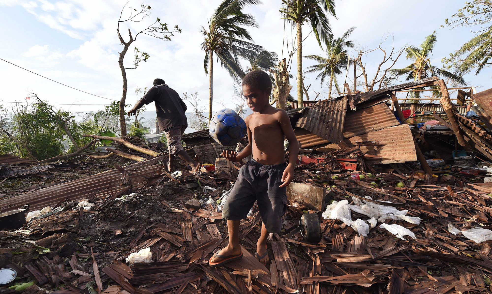

April 1, 2015


Many companies say they love open source, but what does that actually mean? Does it mean they use a lot of software other people have written? Does it mean they like that they don’t have to pay for things? Or do they understand that loving open source also means contributing back to the community the code came from?
Let’s start again. We at iwantmyname love open source! And when I say we love open source, I mean that we’re always trying to work and live up to its ethos—to continuously share the things we learn, and to approach challenges with facts instead of emotion. Open-source development is all about learning and developing in the open, with people we may never meet in real life—it doesn’t matter to any of us what we look like, who we are, what our gender is, our race, religious beliefs, or sexual preference. It’s all irrelevant. The only thing that matters is how we can work together to make projects awesome.
Read more →
March 23, 2015


For those of us who live in temperate climates, it’s difficult to imagine
the unfolding horror of a category 5 tropical cyclone bearing down on your
home with winds exceeding 200 mph. But that was the scenario facing the
inhabitants of the far flung islands of Vanuatu recently. The tiny Pacific
Ocean island archipelago took a direct hit from Cyclone Pam, resulting in
many villages being entirely flattened.
Incredibly and thankfully, the death toll as a result of the storm has been kept to a minimum, but a large section of the population has been left without food, water, and housing. Now a major relief operation is underway involving NGOs and neighbouring governments from the South Pacific region such as New Zealand and Australia. Technology is also playing a part in the recovery with power and communications providers rallying to get services running again quickly. We have seen encouraging reports suggesting that some progress is being made, against all odds.
It’s not the first time a huge cyclone has ravaged communities in the
Pacific. Typhoon Haiyan wreaked havoc across the islands of the Philippines
in 2013. You may recall our efforts to contribute during the Haiyan relief
operation. With your help, we will be financially supporting UNICEF’s operation on the ground in Vanuatu today with an immediate donation of $6,500. We are thrilled to learn that our cash will pack twice the punch because New Zealand philanthropists Gareth and Jo Morgan have agreed to match the first $1 million in donations.
iwantmyname has a longstanding policy of setting aside 10 cents from every
domain registration for charitable purposes, but with the crisis being so
great, we’ve dug a bit deeper to help out our neighbours in their time of need. If you want to make your own donation to the Vanuatu relief fund, you can do so here.
(Photo by Dave Hunt-Pool/Getty Images)
March 11, 2015

From Melody Kramer:
After we drank tea, I watched Betty read articles on her iPad. Her Internet was really slow. She kept accidentally clicking on the ads, or on parts of the story that she didn’t mean to click on. And she was getting a bit frustrated and worried — that by clicking on something, she was going to install malware or not be able to return to her story.
There are 13 million people between the ages of 75 and 84 in the US. There are 5 million between the ages of 85 and 94. (census) That population will grow. At some point, it will be composed of digital natives but that’s a while away. In the interim, are there better ways to design websites for this population? Are there better ways to design the news for them? Of course.
Like any good web entity, we’re always planning for the next evolution of our website. Whether we like it or not, trends change, platforms that were built for one thing get weighed down by incremental additions, and new technologies emerge (like responsive design) that change how sites move through the world. Those things are always moving targets that need to be addressed, but one factor that cannot be overlooked, no matter when your design/redesign occurs, is usability. At the end of the day, the single most important thing you can offer is an easy path from idea to completion.
Here’s a good example of where the internet is going. After I wrote our post about .money, I started looking through various finance websites. What I found didn’t really surprise me, but it’s worth noting nonetheless.
Read more →
March 2, 2015
From Hal Hodson - New Scientist:
A Google research team is adapting that model to measure the trustworthiness of a page, rather than its reputation across the web. Instead of counting incoming links, the system – which is not yet live – counts the number of incorrect facts within a page. “A source that has few false facts is considered to be trustworthy,” says the team (arxiv.org/abs/1502.03519v1). The score they compute for each page is its Knowledge-Based Trust score.
The software works by tapping into the Knowledge Vault, the vast store of facts that Google has pulled off the internet. Facts the web unanimously agrees on are considered a reasonable proxy for truth. Web pages that contain contradictory information are bumped down the rankings.
So much time and effort these days goes into search engine optimization (SEO), but every time I see an article like this, I see a day in the far-off future where all the “tips and tricks” will be replaced by variations of a single question—is your website helping the world or hurting it?
February 27, 2015
From Bryan Bishop - The Verge:
Of course, it should go without saying that the sense of someone we get from their acting and public appearances often bears little resemblance to who they actually are. But what is undeniable is the emotional impact their work has on us. And for the millions of people, like myself, that grew up with Leonard Nimoy, those are the memories that we will carry with us throughout our lives.
It’s a sentiment that Nimoy himself reflected upon on Twitter this past Sunday, in his very last post. “A life is like a garden,” he wrote. “Perfect moments can be had, but not preserved, except in memory.”
February 20, 2015

Podcasts seem to be getting more and more popular by the week, with big shows and big names finally getting the mainstream media attention they deserve. But one of the best things about podcasting is that it can be done by anyone. There aren’t any expensive broadcasting rights or legal hurdles to deal with—all you have to do is get a mic, learn how to use some basic audio software (free options like Garageband are readily available), and find a reliable platform to host your show.
But one thing that trips up many budding podcasters is the domain name. For the same reasons naming anything is hard, naming and finding a domain name for a podcast is a tricky balance between science and intuition.
Read more →
February 3, 2015


Actually getting your own website with your own domain name online can be a bit like exploring a foreign land. Navigating uncharted territory, trying to decipher unfamiliar language. Creating a web presence is not for the weak.
At iwantmyname, we’ve put a lot of work into trying to make that process as painless as possible. And now, with designer Kevin on board, we’re hoping to make even greater strides in user experience friendliness.
One thing some people still sometimes struggle with, though, is just how to get a website up and running. If only it all happened by magic as soon as your domain was registered!
Read more →
February 2, 2015
Generic top-level domain (gTLD) launches have gotten off to a bit of a slow start in 2015, but the overall stats are looking more impressive by the day. According to ntldstats.com, there are now 4,121,213 new gTLDs registered (a nearly 400,000 jump from Jan 1), and so many options to choose from—there’s literally never been a better time than today to get a unique domain with your brand name.
This month, we have eight new domain extensions, including .yoga, .work, and .energy. It’s hard to predict individual TLD popularity because of the abundant options available, but some industry specific options (like .delivery for home delivery startups) have done pretty well in niche markets.
Read more →
January 26, 2015

Newsletters and blogs. Every corner of the internet seems to now be filled with newsletters and blogs in an ongoing competition for user attention. It’s easy to take a cynical view and say that it’s all just unnecessary noise, but in a way, we’re all laying the groundwork for the future of how brands can communicate effectively in a marketplace where competition can literally be created overnight in a bedroom. The reality is that brand culture and the way it’s communicated is one of the last differentiating factors a company has (right after user experience and innovation, I’d say), so it’s hugely important.
Read more →
January 19, 2015

Naming and choosing domains often go hand-in-hand, but many don’t take either as seriously as they probably should. To get a glimpse of the professional naming process, take a gander at “The Weird Science of Naming New Products” by Neal Gabler of the New York Times Magazine.
The idea is to do everything — to leave no word unturned. He visits the website onelook.com, which shows how words work with other words, or sketchengine.co.uk, which combs texts and concordances, flags parts of speech and shows how a specific word appears in billions of words of text. He visits rhymezone.com to find all the words that rhyme with a word. That is how he came up with the name for an ideation application for the Palm Pilot — he began with “brain,” looked for rhyming words and concluded with BrainForest. For this project, he thought of words about travel, but also about entertainment, the sense of engagement, connection, energy, even spheres. And he laid them all out on an Excel spreadsheet — 1,200 names in all by the time he had finished.
For a single project, namers can come up with as many as 6,500 names. Big naming companies will do anywhere from 40 to 50 projects a year, and smaller ones 15 to 20, which adds up to a lot of names. Of course, only one name will be chosen for each project, and that is the only one the client will own. The rest, however, won’t necessarily go to waste. Every naming agency keeps a list of its discards in a computer program. These are then classified by message (at Catchword); by distinctiveness, appeal, memorability and concept (at Interbrand); or by whatever other way the namers might want to retrieve them. Catchword has 650 of these categorized lists. And many of the names will be recycled, which suggests that there is a kind of Platonic ideal of good names, independent of products good or bad — a name so good that it could work, if not on anything, than at least on many things.
Now clearly many (if not most) people/brands can’t afford the premium costs of naming firms, but we should all strive to dig a bit deeper into our brands and ideals before coming up with names (if you don’t have at least 100 ideas on paper, you’re probably not trying hard enough). Just another something to add to your 2015 resolutions list.
Older posts